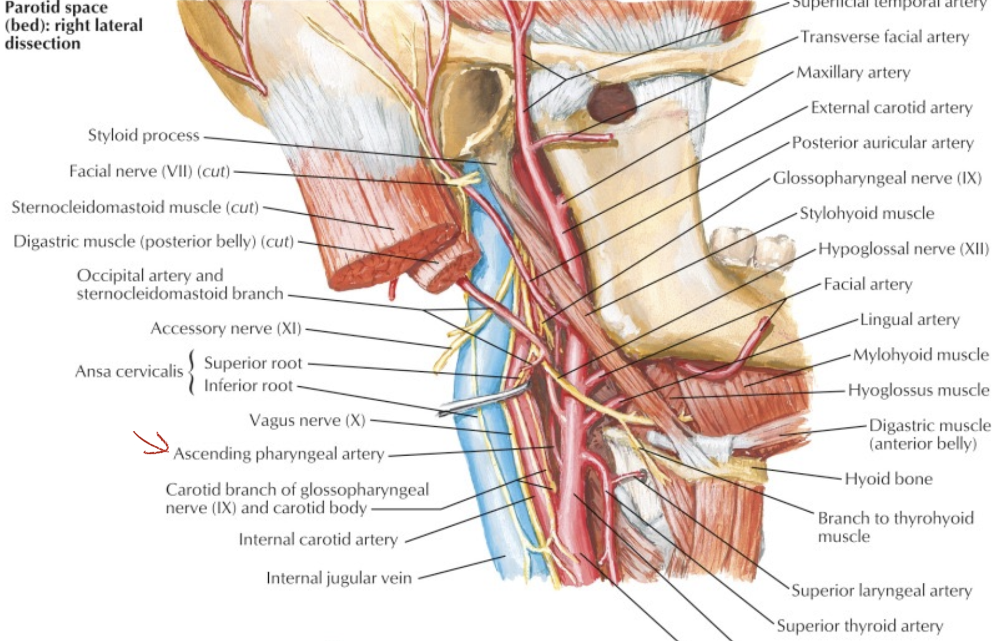
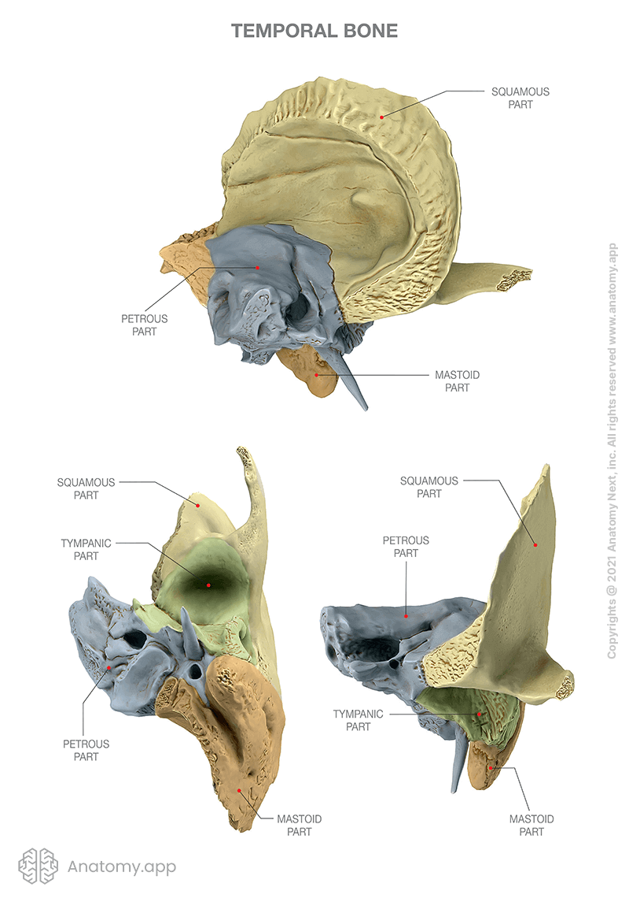
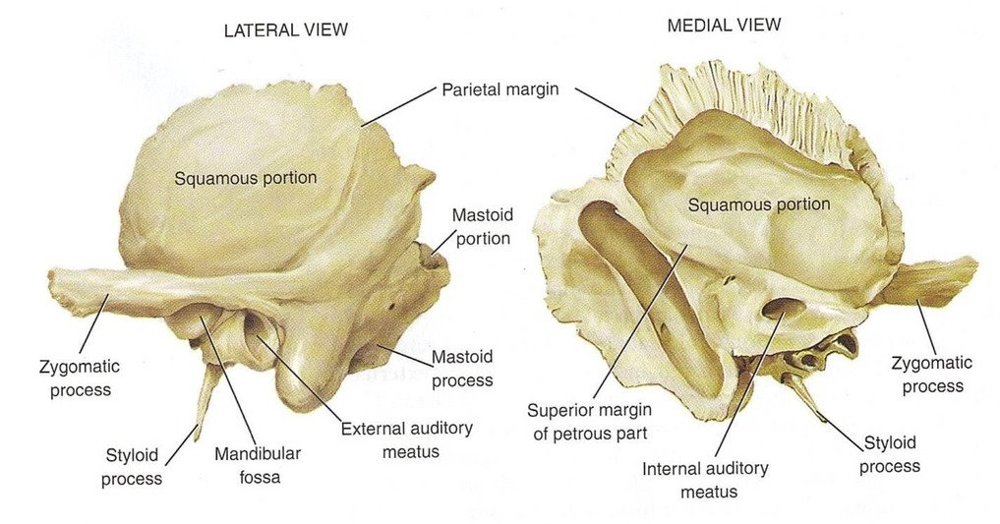
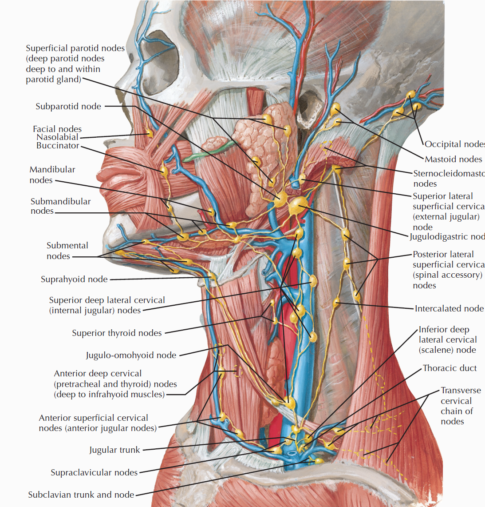
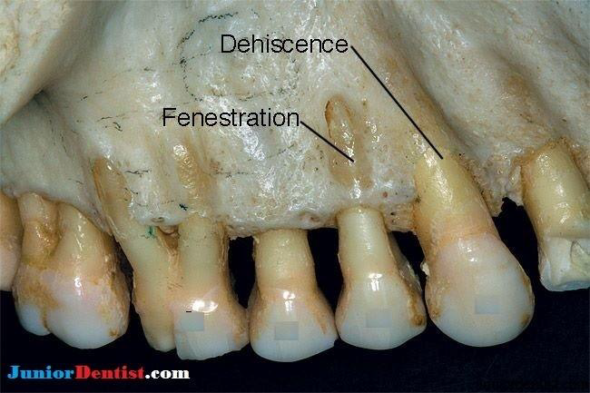
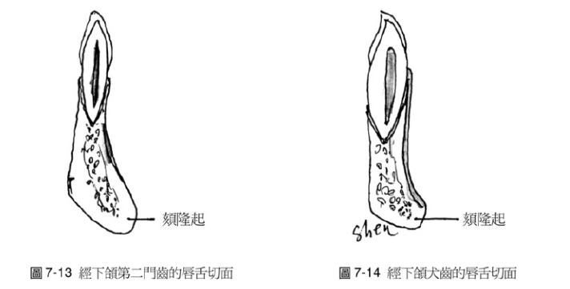
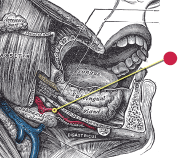
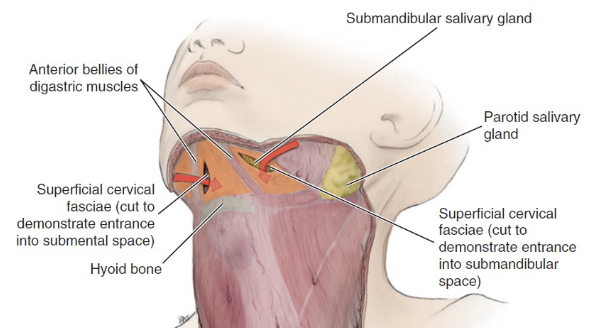

Artery
Subclavian a.

Info
Scalene m.
ant.,mid. scalene insertion at rib 1
post. scalene insertion at rib 2
Thyrocervical trunk
Axillary a.

Common carotid
- carotid sheath
- 頸部無分支
Internal carotid a.
- 進入carotid canal 前無分支
- CN X 伴行
- Carotid canal入顱
External carotid

- lingual a.
- hyoglossus m. 深層，digastric下
Info
由深而淺
lingual a. hyoglossus m. lingual v.&n.
- Superficial temporal a.
- 從耳前上穿出
Danger
Facial a.
digastric上
Ascending palatine a.
- Styloglossus, Stylopharyngeus m. 之間，levator veli palatini m.附近分兩支：
- 支配軟顎
- 支配palatine tonsil, auditory tube

Maxillary a.
- Mandibular part
- Pterygoid part
- Pterygopalatine part

Info
Maxillary a.通過pterygoid muscle淺層，穿入pterygopalatine fossa
First part
- Ant. tympanic a.
- 進入 tympanic cavity，供應 tympanic membrane
- Middle meningeal
- 被Auriculotemporal n. 環繞
Second part
皆有(CN V3)伴行，除了Buccal n.為sensory，其為motor
- Ant./post. deep temporal a.
- Buccal a.
- Masseteric a.
- Pterygoid a.
Third part
皆有sensory 伴行，穿入pterygopalatine fossa
- Sphenopalatine a.
- 最終分支，進入 Sphenopalatine foramen，支配鼻竇
- Vidian a.
- Vidian n.
- maxillary tuberosity
- on alveolar bone
SCM血液
上1/3
中1/3
- Sup. thyroid a.
- Ext. carotid a.
下1/3
- suprascapular a. (>80%)
Cerebral arterial circle

Ophthalmic a.
- Dorsal nasal a.
- Supratrochlear a.
- Ant./ Post. ethmoid a.
- Supraorbital a.
- Ciliary a.
- Lacrimal a.

Vein

Info
subclavian vein 在ant. scalene m. 上方
Nerve
Info
感覺神經 1, 2, 8
運動神經 3, 4, 6, 11, 12
副交感 3, 7, 9, 10
| CN | foramen |
|---|---|
| I | cribriform plate |
| II | optic canal |
| III, IV, V1, VI | sup orbital fissure |
| V2 | foramen rotundum |
| V3 | foramen ovale |
| VII, VIII | Internal coustic meatus |
| IX, X, XI | jugular foramen |
| XII | Hypoglossal canal |

CN III, IV, VI

CN III
- Superior br.
- Motor
- sup. rectus m.
- levator palpebrae superioris m.
- Sympathetic
- sup. tarsal m.
- Inferior br.
- Motor
- inf. rectus m.
- med. rectus m.
- inf. oblique m.
- Parasympathetic
- ciliary ganglion
- sphincter pupillae m.(瞳孔括約肌)
- ciliary m.(水晶體曲度)
injure

CN IV
Motor
- Sup. oblique m.
injure
複視
CN VI
- Lateral rectus m.
CN V1

- Lacrimal n.
- Nasociliary n.
- Ant./ Post. ethmoid n.
- 進入Ethmoid sinus
- Infratrochlear n.
- Long ciliary n.
- 瞳孔擴張
- Ant./ Post. ethmoid n.
- Frontal n.
- Supratrochlear n.
- Supraorbital n.
CN V2

Post. sup. alveolar n.
穿過 pterygomaxillary fissure，支配上顎臼齒(molars)，除了第一大臼齒(mid. sup alveolar n.)
Warning
Infraorbital n.
感覺神經
- Ant./Mid sup. alveolar n.
- 與動脈伴行
- Sup. labial br.
- Nasal br.
Pterygopalatine ganglion
CN V3
Meningeal br.
進入 foramen spinosum
Anterior division
- Masseteric n.
- Anterior and posterior deep temporal n.
- Medial pterygoid n.
- Lateral pterygoid n.
- Buccal n.(Sensory)
Posterior division
- Auriculotemporal n.
- 夾 mid. meningeal a.
- 走進 Digastric, Stylomastoid 之間
- Lingual n.
- Inf. alveolar n.
- Mental n.
- 進入Mandibular foramen
- Incisive n.
- 下顎前牙感覺
- Mental n.
- Mylohyoid n. (Motor)

CN VII
-
Parotid plexus(支配表情肌)
- Temporal br.
- Zygomatic br.
- Buccal br.
- Marginal mandibular br.
- Cervical br.
-
Greater petrosal n.(Parasymphysis)
- Mucous g.
- Lacrimal g.
-
Stapedius n.
- 支配Stapedius m.
-
Chorda Tympanic n.(Parasymphysis)
- 支配前味覺
- Submandibular, Sublingual g.


Parotid plexus


Chorda tympanic

Great petrosal and Vidian
CN VIII
- Vestibular n. (平衡)
- Cochlear n. (聽力)

CN IX
Motor
- Stylopharyngeus m.
- Lesser petrosal n.(Parasymphysis)
- 支配Parotid g.的副交感節前神經
Sensor
- Tympanic n.
- 中耳、鼓膜內面、耳咽管(Eustachian)
- Sinus n.
Terminal
- Pharyngeal br.(with CN X)
- Mucosa of oropharynx
- Tonsillar br.
- Palatine tonsil
- Lingual br.
- 舌頭後1/3味覺、一般感覺
分隔ECA,ICA

CN X
Structure
- common carotid a. 外側，蓋在 thyrocervical trunk 上
- recurrent laryngeal n.沿 tracheoesophageal groove 攀升(就是食道和氣管中間)，接觸 medial thyroid gland，向內鑽到 inf. constrictor，進入 larynx，同時支配感覺與運動
recurrent laryngeal n.
- left: arch of aorta
- right: Subclavian a.
Motor
-
Pharyngeal br.
- Pharynx (除了 Stylopharyngeus)
- Sup. laryngeal n.
- Internal br.(Internal laryngeal n.)
- Sensor
- External br.
- Internal br.(Internal laryngeal n.)
- Recurrent laryngeal n.
- 過Cricothyroid joint改叫Inf. laryngeal n.
Sensor
-
Auricular br(腦內)
- Ext. acoustic meatus
-
Int. laryngeal n.
- Laryngopharynx
- Larynx (Vocal fold 以上)
-
舌根、Epiglottis 味覺
CN XI
- Spinal root(C1-C5)混合
- 向後支配SCM, Trapezius
CN XII
- 跨過ECA所有分支，除了Occipital a.
- 與Ansa cervicalis 混和
- 支配舌部肌肉

Cervical plexuses


Ansa cervicalis
- Omohyoid
- Sternohyoid
- Sternothyroid
- Geniohyoid
- Thyrohyoid

Sup. cervical ganglion
支配carotid plexus, pharyngeal plexus
Gland
Salivary g.
| Parotid | Submandibular | Sublingual |
|---|---|---|
| serous | mostly serious | almost mucous |
Parotid g.


Muscle of Mastication
都是CN V3支配
| Masseter | Temporalis | Medial pterygoid | Lateral pterygoid | ||||
|---|---|---|---|---|---|---|---|
| Superficial | Deep | - | Superficial | Deep | Upper | Lower | |
| Origin | zygomatic arch | inferior temporal line temporal fascia |
Maxillary tuberosity Pyramidal process of the palatine |
Medial surface of lateral pterygoid plate |
Greater wing | Lateral surface of lateral pterygoid plate |
|
| Insertion | Angle inferior and lateral ramus |
Superolateral ramus Coronoid process |
Coronoid process anterior border of ramus |
Medial ramus angle |
Articular disc capsule of the TMJ |
Pterygoid fovea | |
| Actions | Elevates Protrudes |
Elevates Retrudes |
Elevates Protrudes |
Depresses Protrudes |
|||
Osteology
分類
| 顱骨(8) | 顏面骨(14) |
|---|---|
|
|
再生三要件
- Cell
- Scaffold
- Growth factors
一些單字
- notch
- 壓跡
- eminence
- 最凸點
骨頭
Frontal bone
- Frontal sinus
- Supraorbital notch/foramen
- Glabella(眉間)
- Lacrimal fossa
相鄰骨
Pr, S, L, N, E, Z, Mx

Parietal bone
- Sagittal suture
- Lambdoidal suture
相鄰骨
F, O, T, S, Pr’
Ethmoid bone
- Cribriform plate
- Olfactory n. (CN I)
- superior and middle Nasal concha
inferior Nasal concha

Sphenoid bone
-
pterygoid hamulus
-
Foramen rotundum
-
Foramen ovale
-
Foramen spinosum
-
Pterygoid canal
-
Foramen lacerum (破裂孔)
-
Optic canal
- CN II
- Ophthalmic a.
-
Sup. orbital fissure
- Ophthalmic n.(CN V1)/ v.
- CN III, IV, VI
相鄰骨
F, O, T, E, Pr, V, Z, Pl, Mx

上視圖

前視圖

後視圖

Temporal bone
- Carotid canal
- Ext. acoustic meatus
- Int. acoustic meatus
- CN VII, VIII
- Jugular foramen
- int. jugular v.
- CN IX, X, XI
- Stylomastoid foramen
- Foramen lacerum
- Petrotympanic fissure
- Zygomatic process
- articular eminence
相鄰骨
Pr, O, S, M




Occipital bone
- Hypoglossal canal
- CN XII
- Foramen magnum
- Spinal cord
- Vertebral a.
- CN XI
- Jugular foramen
- Foramen lacerum
Pr, T, S, C1
Ethmoid bone

Vomer

Maxillary bone
F, Z, N, L, V, E, Pl, S, INC
骨折

Alveolar bone
- Palatine process
- Alveolar process
- Maxillary tuberosity (智齒後)
- Incisive canal
- nasopalatine n. and vessel

Palatine bone
- Greater palatine foramen
- Lesser palatine foramen
- Greater/ lesser palatine n.
Lacrimal bone
淚囊（lacrimal sac）
相鄰 lacrimal bone, maxillary bone
相鄰骨
F, Mx, E, INC
Mandible
- Symphysis & Parasymphysis Body Ramus
- Condylar process
- Coronoid process
- Mandibular foramen
- Mental n.
- 第一小臼齒下
- Mental foramen
- Lingula (小舌)
- Mental spine (頦棘)
- Sublingual g. Mylohyoid line Submandibular g.
- Oblique line
- 7,8外
- Antegonial notch
facial a./v.經過


肌肉接點


Hyoid bone

眼眶
腦洞們


Buttress
傳導力量

Sutures
- Coronal
- Sagittal
- Lambdoidal(人字)
- Squamosal(鱗)
- Temporozygomatic
- Median palatine
- Transverse palatine

Lymphatic system
總圖


Nodes


Lingual Lymphatic nodes
病灶

Groups

- Level I
- the submental group (Ia), and the
submandibular group (Ib). - Level II
- the upper jugular lymph nodes
- level IIa – CN XI 前
- level IIb – CN XI 後
- Level III
- the middle jugular lymph nodes
- Level IV
- the lower jugular lymph nodes
- Level V
- all lymph nodes contained within the posterior triangle
- Level VI
- lymph nodes of the anterior (central) neck compartment
Tip
清除 I, II, III
Nasal cavity
Oral cavity
Tongue
Tonsil
Face
- Maxillary
- Buccinator
- Supramadibular

Larynx
用vocal fold 分，上,下分別到SDC, IDC

Thyroid
跟著Sup./ Inf. thyroid a.走，分別到SDC, IDC
Nose
Bone
- Frontal (nasal process)
- Maxilla (frontal process)
- Nasal
Cartilage
- Septal
- Lateral nasal
- Alar

Artery
- Dorsal nasal a.
- External nasal a.
- Nasal br.
- Septal a.
- Alar a.

Nerve
- Ant. ethmoid n.
- Int./ Ext. nasal n.
- 鼻內/ 外感覺
- Int./ Ext. nasal n.
- Nasociliary br.
- Infraorbital n.
- Nasal br.
Nose cavity

Hypophyseal fossa
腦下垂體在這
Nasal septum (鼻中膈)
- nasal sepal cartilage
- perpendicular plate of ethmoid
- vomer

Nerve
- Olfactory n. (CN I)
- Anterior ethmoid n.
- 中下鼻甲前測一般感覺
-
Infraorbital n.
-
- Post. inf. nasal Br. of Greater palatine n.
- Nasopalatine n.
- 走在鼻中隔
- 穿過 Incisive canal
- Post. lat./med. sup. nasal n.

Artery
-
- 供應鼻中隔
-
- Septal br.

- Septal br.
-
- Sphenopalatine a.
- to Incisive canal
- Greater palatine a.
- Sphenopalatine a.
Paranasal sinuses
鼻旁竇，濕潤呼吸的空氣
| Artery/ Nerve | |
|---|---|
| Frontal | Ophthalmic br./ division |
| Maxillary | Maxillary br./ division |
| Ethmoid | Ophthalmic br. Maxillary br. |
| Sphenoid |


Frontal sinus
神經皆CN V1
- Anterior ethmoid a.
- Supraorbital a./n.
- Supratrochlear (滑車上) a./n.
Maxillary sinus
來自Maxillary a. 3rd Part, Maxillary division
- Ant./mid. sup. alveolar a./n.
- Post. sup. alveolar a./n.
Ethmoid sinus

ethmoid bulla
Mid. ethmoid sinus 開口

Sphenoid sinus
Ear
.png)
TMJ
Supply
artery
-
Anterior:
- Masseteric a.
-
Posterior:
- Sup. temporal a. (TMJ br. )
- Ant. tympanic a.
- Deep auricular a.
Vein
- Superficial Temporal
- Maxillary
- Pterygoid plexus
Nerve
- Auriculotemporal(Sensor)
- Masseteric br. of the mandibular n. (Sensor)
- Post. deep temporal nerve
Join capsule
Articular eminence 到 articular fossa
Joint disk
-
分成 Ant. band(2mm), Central intermediate zone(1mm),
Post. band(3mm) -
Dense fiber CT，無神經血管
-
Lower division 連到 condylar neck 的 lat.,med. poles
-
Upper division 連到 Temporal bone 的 postglenoid process

collateral ligament
retrodiskal tissues
有神經血管，分秘 Synovial fluid 到 Synovial cavity
- Superior retrodiskal lamina:elastic fibers,接到 tympanic plate,限制平行移動
- Inferior retrodiskal lamina:Collagen fibers,將 disc 接到 condyle,限制旋轉移動
Ligament
- Temporomandibular ligaments
- Inner horizontal protion
限制向後 - Outer horizontal protion
限制旋轉、平移
- Inner horizontal protion
- Stylomandibular ligaments
- Sphenomandibular ligaments

Info
Stylomandibular ligament 分隔 parotid ,submandibular g.
JAW movement
- 旋轉: 下顎離上門牙2.5cm
- 平移: disc-condyle complex 沿 articular eminence 滑動,可再往前張開約 1.5 公分

movement

Alveolar process
- Alveolus of maxillary central incisor
- Interdental septum
- Interradicular septa
- Alveolar eminence

Dehiscence & Fenestration

Sharpey’s fiber
牙齒與齒槽之間，包含縱向 principal fiber(Sharpey’s fiber) 連接牙齒與齒槽骨
區分process
上門齒
- 側門牙根較靠近鼻腔底

上犬齒
- 唇側齒槽薄
- 顎板比小臼齒厚
上臼齒
- Maxillary sinus下
- 大臼齒牙根分內外

下門、犬齒
- alveolar process 薄

下臼齒
- alveolar process 厚
- 5 在 mental fossa上方
- 6, 7, 8有 Oblique line
- 6, 7 多牙根一前一後，distal 可能多個
- 8 在Submandibular fossa 上


區分上下顎
- 下顎Cortical plate 厚，越後面越厚
- 下頷管
Info
- cortical plate: 皮質骨，X-ray 下白色
- Sponge bone: X-ray 下黑色
Tip
上顎可浸潤麻醉，因為cortical plate薄
舌頭
Structure

- Terminal sulcus(terminalis)分前後
Papillae

Filiform
- 最多
- 無 taste buds
Fungiform
- 前側
- CN VII
Foliate
Circumvallate
- 後側
- CN IX
Nerve
運動
感覺
- 根部 taste/ general sense
- 後 taste/ general sense
- 前
- Taste: Chorda tympanic
- General sense: Lingual n
Hyoglossus m. 外側
- Lingual n.
- Hypoglossal n.
- Submandibular duct

Artery
Lingual a.
Genioglossus m., Hyoglossus m.之間
- Deep lingual a.
- Sublingual a.
- 會合 Submental a. (Facial a. 分支)

- 會合 Submental a. (Facial a. 分支)
Muscle
Extrinsic muscles
Motor:CN XII
移動舌頭
- Genioglossus(makes bulk of the tongue)
- Hyoglossus
- Styloglossus
Motor:CN X (Pharyngeal plexus)
- Palatoglossus

Intrinsic muscles
Motor:CN XII
改變舌頭形狀
- Sup. longitudinal
- Inf. longitudinal
- Transverse
- Vertical
Oral cavity
上顎

Cheek
- Parotid papilla
- 上顎第二大臼齒外
- pterygomandibular raphe
- pterygomandibular space 邊界
Floor
- Sublingual papilla (caruncle)
- Submandibular g. 開口
Pharynx
Structure

Nasopharynx
Sensor:CN V
- Opening of Pharyngotympanic tube (auditory tube, Eustachian tube)
- 前:Salpingopalatine fold
- 後:Torus tubarius Salpingopharyngeal fold
- Pharyngeal tonsil
Pharyngotympanic tube

- 通過 Temporal bone
- 後2/3是軟骨
Oropharynx
Sensor:CN IX
由外而內
- Palatoglossal fold(arch)
- Palatine tonsil
- Palatopharyngeal fold(arch)
- 分隔口腔與口咽(fauces)
Laryngopharynx
Sensor:CN X
- Epiglottis
- Choana 後鼻孔
- Piriform recess
- (medial) larynx;
- (lateral) thyroid cartilage
- (posterior) Inf. pharyngeal constrictor m.

Muscle

外部
-
pharyngeal constrictor
- CN X (Pharyngeal plexus) 控制
- 環狀肌肉
外 內 Sup Pterygomandibular raphe pharyngeal raphe Mid Hyoid bone 的 greater horn,
Sup. pharyngeal constrictorInf Thyroid cartilage 的 oblique line,
Cricoid cartilage -
Stylopharyngeus
- 穿入Sup. Mid. pharyngeal constrictor之間
- CN IX 支配


內部

Vagus 支配
- Palatoglossus m
- palatoglossal fold 下
- Palatine aponeurosis lateral side of tongue
- Palatopharyngeus m
- palatopharyngeus fold下
- Hard palate and palatine aponeurosis Thyroid cartilage and pharyngeal wall
- salpingopharyngeus m.會合
- Salpingopharyngeus m.
- salpingopharyngeal fold下
- Cartilage of pharyngotympanic tube(耳咽管軟骨) thyroid cartilage and pharyngeal wall
- Levator veli palatine m.
- From Scaphoid fossa
V3支配
- Tensor veli palatini m.
- 增加軟顎強度
- 打開耳咽管
- 繞過 pterygoid process
藍圈: Pharyngotympanic tube
綠: Tensor veli palatini m.


Nerve
Pharyngeal plexus
- CN IX
- 主要 Sensor
- Stylopharyngeus m.
- CN X
- 主要 Motor
- Sup. laryngeal n.
- CN XI
- Motor
Others
- Recurrent laryngeal branch of the vagus
- Part of Inf. constrictor m.
- Pharyngeal n.
- Sensor of nasopharynx & the auditory tube
- CV V3
- Tensor veli palatini


Artery
From Ext. carotid a.
- Ascending pharyngeal
- stylopharyngeus
- constrictor m.
- palatine tonsil
- soft palate
- Sup. thyroid a.
- 穿過 Inf. constrictor m.
- Thyroid gland
From Facial a.
- Ascending palatine
- Sup. constrictor m.
- Soft palate
- Tonsillar a.
- Sup. constrictor m.
- palatine tonsil
Others
-
- Superior portion of the nasopharynx
- Auditory tube

Larynx

Muscle
關閉 Epiglotticus
- Thyroepiglotticus m
- Aryepiglotticus
Vocal fold
Motor: Recurrent laryngeal n.
- Arytenoid m.
- Transverse fiber / Oblique fiber
- Vocal fold adduction
- Post. cricoarytenoid
- Vocal fold abduction
- Lateral cricoarytenoid m.
- Vocal fold adduction
- Thyroarytenoid m.
- Arytenoid cartilage 往前
Motor: External laryngeal n.
- Cricothyroid m.


假聲帶:Vestibular Fold
Artery
Nerve
- Sup. laryngeal n.
- Internal br.(Internal laryngeal n.)
- Sensor
- 穿過 Thyrohyoid ligament
- External br.
- Motor
- Internal br.(Internal laryngeal n.)
- Recurrent laryngeal n.
- Inf. laryngeal a.伴行
- 過Cricothyroid joint改叫Inf. laryngeal n.


Neck

Triangle

Muscle
舌骨上
| 肌肉 | 神經支配 |
|---|---|
| Mylohyoid | CN V3 |
| Digastric | Ant. belly: CN V3 Post. belly: CN VII |
| Stylohyoid | CN VII |
| Geniohyoid | C1 |
舌骨下
| 肌肉 | 神經支配 |
|---|---|
| Omohyoid | Ansa cervicalis |
| Sternohyoid | |
| Sternothyroid | |
| Thyrohyoid m. | C1 |

Others
| 肌肉 | 神經支配 |
|---|---|
| Trapezius | CN XI |
| SCM |
Fasciae

Superficial fascia
- 表情肌
- Platysma
Deep fascia
Head
- Temporal fascia
- Temporal arch以上
- Masseteric-parotid fascia
- Temporal arch以上
- 連到investing fascia
- Buccopharyngeal fascial
- 連到investing fascia
- Pterygoid fascia
- Pterygoid m. 外
Neck
-
Investing fascia
- 最外層
-
Carotid fascia
-
Visceral fascia
- 食道呼吸道
-
Vertebral facial


Space


Vestibular space
- of Maxilla
- of Mandible

Canine space (Maxilla)
- Nasolabial sulcus

Buccal space
- Buccal fat pad
- Parotid duct
- Facial a.

Parotid space
- Parotid g.
- Facial n.
- ECA
- Retromandibular v.
Masticator space

Temporal space
Temporalis m.分隔
- Superficial temporal space
- Deep temporal space
Infratemporal space
Zygomatic arch 以下
- 外側
- Temporalis
- 內側
- Pterygoid plate
- Maxillary a.
Pterygomandibular space
Med. pterygoid m.外
- Inf. alveolar a./ v./ n.
- Lingual n.
Submassetric space
Submental & Submandibular space
Submental
- Digastric, Hyoid bone, Mandibular symphysis 為界
- Superficial cervical fascia為底，Mylohyoid m. 為頂

Sublingual space
- Lingual n./a.
- Hypoglossal n.

Cervical spaces


Previsceral space
Parapharyngeal space
Retropharyngeal space
- Dangerous space
- Sup. pharyngeal constrictor m.後
Perivertebral & Paravertebral space
Infratemporal fossa
血管
Nerve
Pterygopalatine Fossa


Pterygomaxillary fissure
Infratemporal fossa
- PSA n.
- Maxillary a.
- Variable network of veins into the pterygoid plexus
Sphenopalatine foramen
Nasal cavity
- Nasopalatine n.
- Post. sup. nasal n.
- Sphenopalatine vessels
Inferior Orbital fissure
Orbit
Palatine canal
Hard & soft palate (Oral cavity)
- Greater palatine n. and vessels
- Lesser palatine n. and vessels
Foramen Rotundum
Middle cranial fossa
- CN V2出顱
Pterygoid canal
Foramen lacerum (破裂孔)
Pharyngeal canal
Nasopharynx
Pterygopalatine ganglion
- Greater/lesser palatine n.
- Nasopalatine n.
- Post. sup. nasal n.
- Pharyngeal n.
Temporal fossa

Artery
Vein
- Superficial temporal:
- Anterior to the Superficial temporal a.
- Joins the maxillary v. to form the
- retromandibular v.
- Middle temporal:
- Arises deep within the temporalis m. and fascia
- Joins the superficial temporal v. immediately before it passes inferior to the root of the zygomatic arch
- Anterior & Posterior deep temporal:
- Drain into the pterygoid plexus of veins
- Also communicate with the middle temporal v.
- Maxillary: *
- A short branch formed by a confluence of the pterygoid plexus of veins
- Joins the superficial temporal v. to form the retromandibular v.